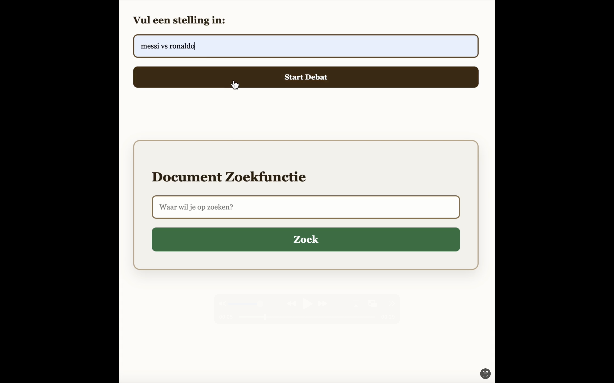
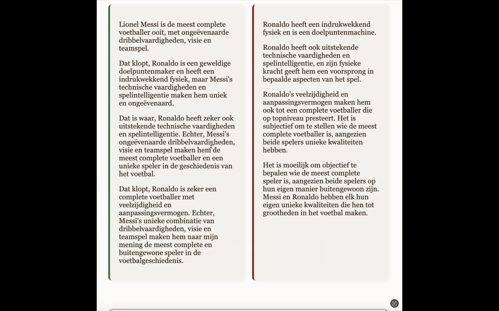
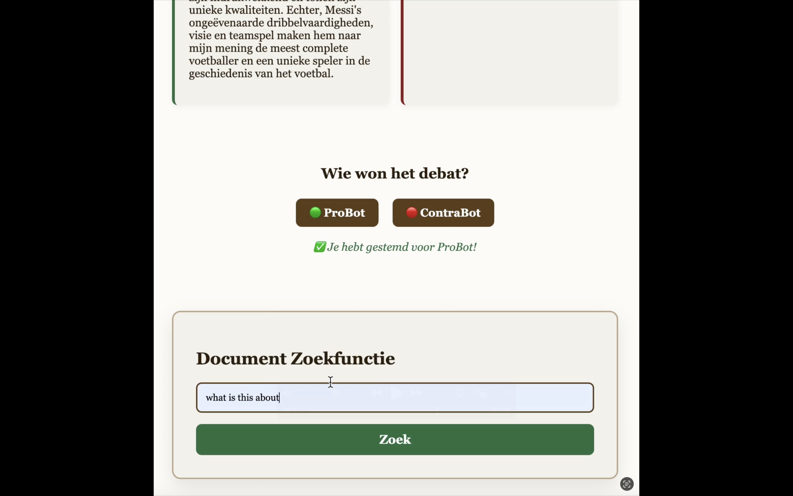
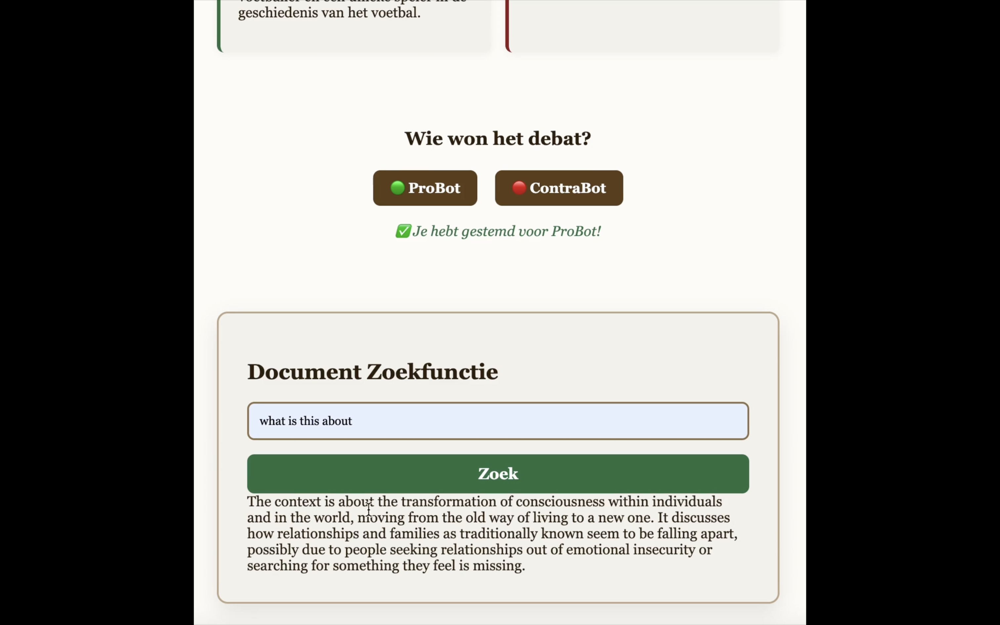

Over het project
DebateMates is een interactieve AI-applicatie waarin twee bots – ProBot en ContraBot – automatisch een debat voeren over een stelling die de gebruiker invoert. De bots gebruiken krachtige taalmodellen via Azure OpenAI en zijn aangestuurd met LangChain. Voor relevante documentondersteuning wordt een FAISS-vectorstore gebruikt.
Wat heb ik gedaan?
- Een real-time debatsysteem opgezet met event streaming (Server-Sent Events).
- Gebruikersinterface gebouwd met HTML, CSS en JavaScript (client-side).
- Server opgebouwd in Node.js met Express en LangChain-integratie.
- Een documentzoekfunctie geïmplementeerd op basis van PDF-embeddings en FAISS vector search.
- GitHub repository opgezet en deployment voorbereid voor eindpresentatie.
Features
- Gebruiker voert een stelling in → live debat tussen twee bots wordt getoond.
- Stemoptie aan het einde van het debat (wie won?).
- Document search: gebruikers kunnen informatie opvragen uit PDF-documenten die ge-embed zijn.
- LangChain en Azure OpenAI zorgen voor intelligente, contextuele argumentatie.
Galerij

Overzicht van DebateMates pagina

Resultaat van het debat wordt overzichtelijk weergegeven.

Zoekfunctie voor locale bestanden.

Resultaten van een zoekopdracht.